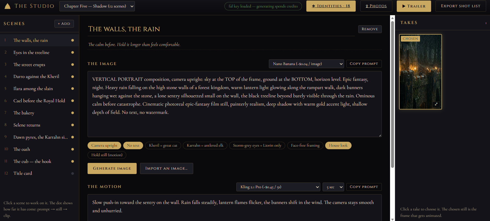
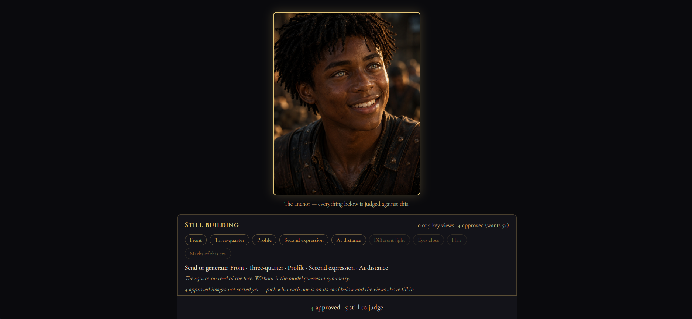
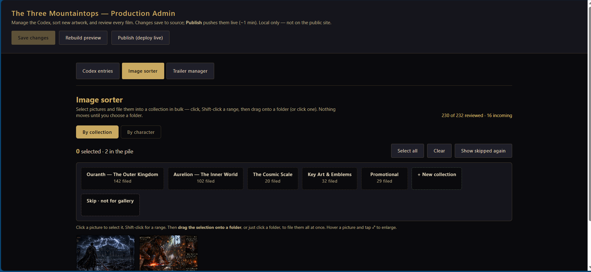

ONE SYSTEM · THREE TOOLS
Story in, finished consistent media out
The Studio · the identity lock · the asset pipeline
- The Studio — story → per-scene image and motion prompts, routed across multiple image and video models with live per-image / per-second cost shown, plus take selection, a trailer builder, and one-click shot-list export. The operator writes intent; the system handles routing, prompts, and cost.
- Character & location identity lock — an "anchor" system: each generated view of a character (front, three-quarter, profile, expression, distance, light) is judged against one approved reference face, and world rules are applied per prompt, so renders stay the same person in the same world. Character consistency is a hard problem in AI media; this is my working approach to it.
- Asset review & publish — a bulk review tool for hundreds of generated images: select a range, file it into a collection by drag or one click, and pushes them live to a real site through a save → rebuild-preview → publish gate. The screenshot below shows it at 230 of 232 images reviewed.


